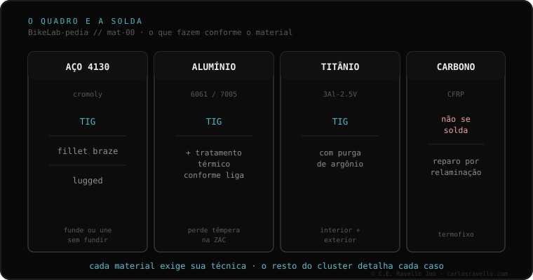

Início › BikeLab-pedia › O quadro e a solda
Cluster 10 · O quadro e a solda
O quadro e a solda
Seu quadro trincou e a pergunta é "dá pra soldar?". Antes dela há uma melhor: de que material é, e o que o calor faz nele? Cada material —aço, alumínio, titânio, carbono— exige sua técnica e deixa sua marca. Aqui não decidimos por você se deve reparar; damos o idioma para entrar na oficina sabendo o que vão fazer no seu quadro e o que perguntar.

O mapa do cluster: qual técnica e qual marca a solda deixa conforme o material. Alumínio 6061 vs 7005 Comece aqui se seu quadro é de alumínio. A pergunta que muda tudo: qual liga é e por que uma pede forno e a outra não. O processo · o que acontece ao soldar
Zona termicamente afetada (ZTA) A faixa onde o metal muda sem fundir. Dela depende quase tudo: por que o quadro às vezes quebra ao lado da solda. TIG, MIG e brasagem Fundir o tubo ou uni-lo sem fundi-lo. Qual técnica corresponde a cada material e por que importa. Vareta de adição: 4043 vs 5356 O arame que preenche a junta de alumínio. Resistência, acabamento e por que a escolha não é trivial. Por material
Aço cromoly: TIG, fillet, lug O mais fácil de soldar. Três formas de uni-lo, e por que "fácil" não significa "qualquer serralheiro". Titânio e a purga de argônio Por que o cordão muda de cor, o que significa, e por que não é para qualquer oficina. Carbono: por que não se solda Termofixo, não funde. O que é a relaminação por scarf e por que "fibra de loja de ferragem" é um sinal de alerta. Decidir com critério
Fadiga por material Aço e titânio têm limite de fadiga; alumínio e carbono não. Mas o projeto pesa mais que o rótulo. O que perguntar ao soldador As quatro perguntas que separam em trinta segundos quem entende de quadros de quem só solda portões. Leituras relacionadas
Guia: seu quadro trincou — o que fazer e dizer O passo a passo em linguagem simples para entrar na oficina com critério, sem pânico. Revisão documentada: solda de quadros por material O relatório técnico com dados, tabelas e 19 fontes. © 2026 BikeLab Studio. Conteúdo sob CC BY 4.0 : você pode copiar, traduzir e publicar, inclusive com fins comerciais. A citação é obrigatória. Sem atribuição, a licença é revogada automaticamente (CC BY 4.0, §6.a) e o uso passa a ser violação de direitos autorais: solicitamos a retirada do conteúdo e sua desindexação. · Design e propriedade: Carlos Ravello Joo
BikeLab-pedia · Cluster O quadro e a solda / Materiais e processo / Carlos Eduardo Ravello Joo · BikeLab Studio · Trujillo, Peru